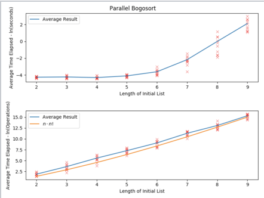

{RUN TIME}
If all elements to be sorted are distinct, the expected number of comparisons performed in the average case by randomized bogosort is asymptotically equivalent to (e − 1)n!, and the expected number of swaps in the average case equals (n − 1)n!.[1] The expected number of swaps grows faster than the expected number of comparisons, because if the elements are not in order, this will usually be discovered after only a few comparisons, no matter how many elements there are; but the work of shuffling the collection is proportional to its size. In the worst case, the number of comparisons and swaps are both unbounded, for the same reason that a tossed coin might turn up heads any number of times in a row.
The best case occurs if the list as given is already sorted; in this case the expected number of comparisons is n − 1, and no swaps at all are carried out.
For any collection of fixed size, the expected running time of the algorithm is finite for much the same reason that the infinite monkey theorem holds: there is some probability of getting the right permutation, so given an unbounded number of tries it will almost surely eventually be chosen.
"